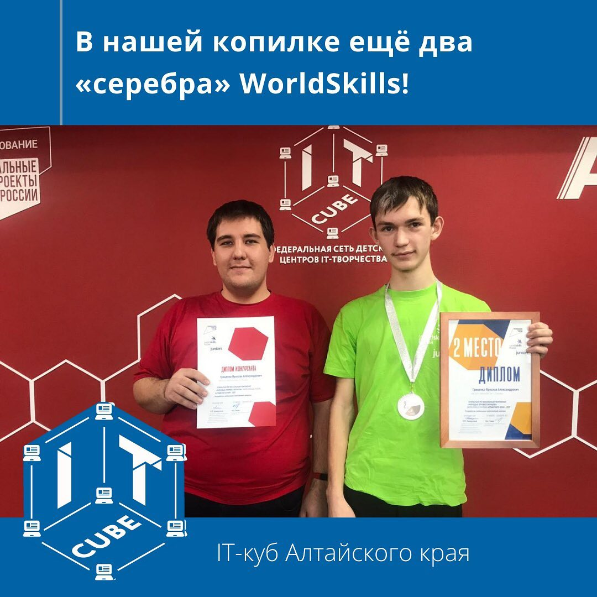

Обо мне
Программирование
Мой путь в программировании начался в ноябре 2020 с... верстки. Я прошел пробную часть Яндекс. Практикума, прослушал первый модуль "Web-разработка" от 1С для школьников. Итогом стал WIM.
Затем, 18 декабря я начал проходить Javarush. Курс я не окончил (остановился на половине последнего модуля), потому что прекратил чувствовать ощутимый прогресс
В начале этого года я поступил в Яндекс. Лицей. После Javarush это кажется легкой прогулкой)
Но java я не забросил (как можно?!), в ноябре 2021 я участвовал в Worldskills. Алтайский край. Из-за накладки Worldskills на муниципальный ВСОШ по информатике, я пропустил один день чемпионата, что отразилось на итоговом рейтинге. Второе место. А это был последний раз, когда я мог участвовать в возрастной группе до 16.
Учеба и олимпиады
Я отличник. Хожу на доп. занятия по математике("Наследники Ползунова"). В этом году прошел на регион ВСОШ по информатике, физике и математике. Стал призером второй и не смог участвовать в последней из-за того, что уехал в ВДЦ "Океан", где и нахожусь сейчас. Верстаю с телефона)
Мои проекты
ВИМ
«ВИМ - Веб Инструмент Математика»
ВИМ - мой первый проект. Он был создан как школьный проект.
Weather app
Стандартный учебный проект. Приложение имеет несколько форматов ввода: текущее местополодение, координаты, название города, id города, посылает запрос на сервер и выводит результат
"D" - notebook app
Проект на региональный конкурс. ToDo list с регистрацией, авторизацией, публичными/приватными редактируемыми заметками. Всё это пока хранится в локальной базе данных, но в будущем, возможно, будет взаимодействие с сервером.